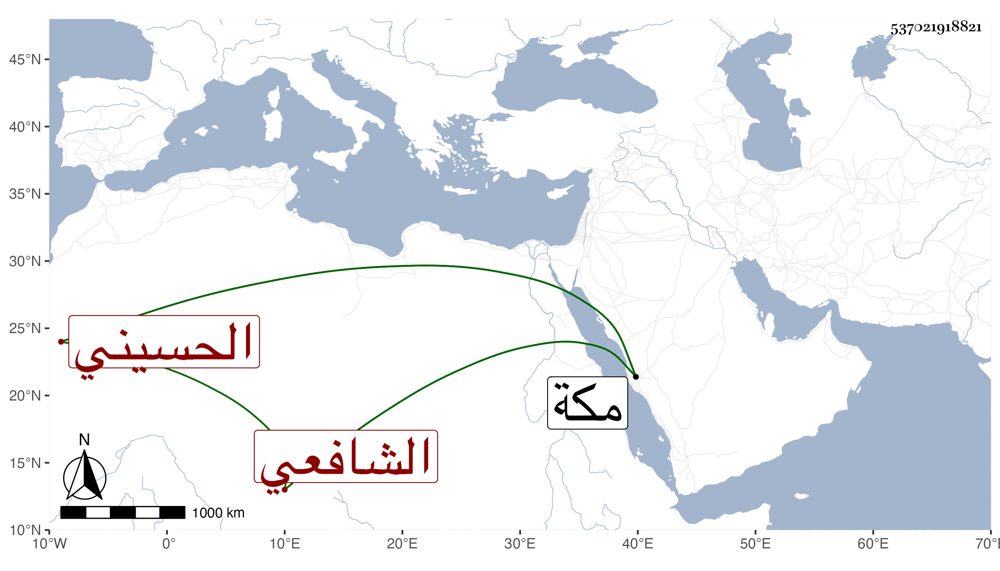

0902Sakhawi.DawLamic.ITO20230111-ara1.EIS1600.537021918821
Biography ID: 537021918821
456
أحمد بن محمد بن عمر شهاب الدين الحسيني سكنا الزيات أبوه الشاهد هو الشافعي ويعرف بابن عزيز تصغير عز . ممن لازمني في قراءة البخاري وغيره بل قرأ علي الأذكار بتمامه وكذا قرأ على الديمي واشتغل يسيرا عند ابن قاسم وغيره وتنزل في البرقوقية وغيرها وحج غير مرة وجاور وكتب بخطه أشياء وجلس بحانوت المالكية بالجوانية وانتمى للعلاء بن الصابوني ناظر الخاص وتكرر دخوله مكة في التجارة مع مشاركة وإرسال بما لعله يكون من الأخبار لمن يكون بمكة .
